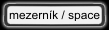
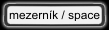
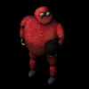
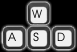
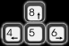
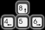

| |
|
 |
|
| Úvod Ovládání Bonusy Mrchy Editor Autoøi | |
|
|
ÚvodVítejtena manuálových stránkách o høe Bombiè. Bombiè je hra typu Bomberman a Dynablaster. Obsahuje rozsáhlou pøíbìhovou èást a samozøejmì deathmatch. Lze hrát a¾ ve ètyøech hráèích na jednom poèítaèi a to jak deathmatch, tak pøíbìhovou èást, která je zamìøena zejména na zabíjení rùzných mrch. Aby byla hra zábavnìj¹í a pestøej¹í, jsou pøipravené tøi rozdílné krajinky a mnoho rùzných bonusù. Jednotlivé èásti hry jsou popsány na dal¹ích stránkách. |
OvládáníMenuV menu si vybíráte pomocí . Výbìr potvrdíte stiskem nebo .
Je-li mo¾nost vìt¹ího výbìru, mù¾ete po¾ít i nebo .
Je-li mo¾nost vìt¹ího výbìru, mù¾ete po¾ít i  .
O obrazovku vý¹ se dostanete stiskem .
O obrazovku vý¹ se dostanete stiskem  . Stiskem v hlavním menu se hra ukonèí.
Menu je dìláno velice intuitivnì a orientace v nìm by nemìla nikomu èinit potí¾e. . Stiskem v hlavním menu se hra ukonèí.
Menu je dìláno velice intuitivnì a orientace v nìm by nemìla nikomu èinit potí¾e.
Mo¾nosti nastaveníJazyk - AJ / CZ / DEPredikce výbuch ANO / NE Násilný deathmatch ANO / NE Rychlost hry 1.0 - 4.0 Celá obrazovka ANO / NE Zvuk ANO / NE Ovládání pøi høe 1. hráè - 1. hráè -    2. hráè -   3. hráè - 3. hráè -   4. hráè -  4. hráè -   zmìna rychlosti   pauza  násilný konec |
BonusyJako ka¾dá správná bombièová hra má i Bombiè mnoho bonusù, které vám pomáhají zdrtit nepøátele. Sna¾ili jsme se pøidat v¹echny dùle¾ité a známé. Bonusy jsou uvedené v takovém poøadí, jak se postupnì stávají dostupné pøi høe. Nìkteré pak je mo¾né pou¾ívat pouze pøi deathmatchi, proto¾e jsou pøíli¹ silné. Bonusy se objevují na rozbitých polích. V pøíbìhové høe s urèitou pravdìpodobností a pøi deathmatchi v¾dy. Dìlí se na bonusy stálé (staèí vzít jednou), èasové (jejich úèinek je èasovì omezen) a jednorázové. Èasové bonusy fungují tak, ¾e mù¾ete mít jen jeden v jeden okam¾ik. Kdy¾ máte jeden a seberete jiný èasový, úèinky starého zmizí, pøesto¾e je¹tì jeho èas nedobìhl. Lze úspì¹nì pou¾ívat pro léèení nemocí.
|


Pøí¹eryAby bylo mo¾né hrát hru v jednom hráèi, pøipravili jsme pro Vás celou øadu nepøátel. Li¹í se rychlostí, inteligencí, poètem ¾ivotù a samozøejmì obrázkem. Pokud má mrcha více ¾ivotù, tak se ka¾dým zásahem zmen¹í.
|


Editor
| Rozhodli jsme se dát ke høe i editor. Pomocí editoru mù¾ete hru kompletnì zmìnit. Ale mù¾ete si ji úplnì znièit. Proto doporuèujeme zálohovat data, ne¾ se pustíte do experimentování s editorem. Pou¾íváte editor na vlastní nebezpeèí. Mapy je mo¾né ukládat do adresáøe maps nebo do adresáøe s bombic.exe. Pùvodnì byl editor urèen pouze pro nás, tak¾e není pøíli¹ u¾ivatelsky pøátelský. |
Autoøi
|
Programování Bernard Lidický Grafika Zdenìk Böswart Betatesteøi Vosy Jiricek |